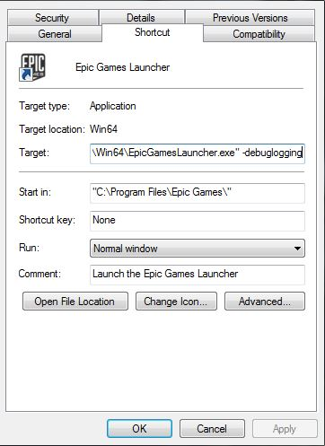

런처 관련 문제 해결
Contents
-
1
런처 관련 문제 해결 방법 안내
- 1.1 런처 추천 사양
- 1.2 제 계정으로 런처에 로그인할 수 없습니다.
- 1.3 윈도우용 런처 설치가 안됩니다.
- 1.4 런처를 실행하면 "기다려 주세요", "서버 연결에 실패했습니다", "현재 에픽 서버에 연결할 수 없습니다" 라면서 진행되지 않습니다.
- 1.5 런처 로드에 실패하거나 로드시 크래시가 납니다.
- 1.6 런처가 콘텐츠를 다운로드하지 못합니다.
- 1.7 로그인을 시도하였을 때 "기다려 주세요..." 에서 시간이 너무 지연되거나 다음으로 넘어가지 않습니다.
- 1.8 위의 방법으로 해결되지 않는 경우 - 디버그 로그 구하기
- 1.9 기타 도움말
런처 관련 문제 해결 방법 안내
언리얼 엔진 런처는 (GitHub 의 엔진 소스 코드와 달리) 언리얼 엔진 4 바이너리 버전을 다운로드하고 실행시킬 수 있는 것 뿐만 아니라, 부가 콘텐츠 다운로드 및 뉴스와 블로그 게시물 열람을 위한 장소로 활용되기도 합니다.
런처 관련 문제를 겪으시는 경우, 아래 문제 해결 안내서를 참고하여 이미 해결책이 있는지 확인해 보시기 바랍니다. 해결책을 찾을 수 없는 경우, (영문) http://help.epicgames.com/ 및 Contact Us 부분 하단의 EMAIL US 버튼을 눌러 이메일로, (한글) http://cafe.naver.com/unrealenginkr/ 언리얼 엔진 네이버 공식 카페의 "질문 및 답변" 게시판에 겪으시는 문제에 대한 정보를, 로그를 포함하여 가급적 자세히 설명하여 주시기 바랍니다.
런처 추천 사양
OS: 윈도우 7, 8, 8.1, 10 의 64 비트 버전 또는 Mac OS X 10.9.2 이상.
하드 디스크 여유공간: 런처 설치에만 최대 1GB. 다른 게임, 에디터와 프로젝트, 마켓플레이스에서 콘텐츠를 다운로드하여 설치하고자 하는 경우 추가 공간이 필요합니다.
그래픽 카드: DX11, DX12 호환 카드.
프로세서: 쿼드 코어 인텔 또는 AMD 프로세서
제 계정으로 런처에 로그인할 수 없습니다.
다른 기기에서도 같은 계정으로 로그인되어 있는 경우 발생할 수 있는 문제입니다. 한 계정 당 동시 접속 가능 기기의 수는 최대 5 개 까지입니다. 로그인 시도가 여러 번 있었던 경우 1 개로 제한될 수도 있습니다.
참고로 언리얼 엔진 포럼 사용을 위해 접속한 기기 역시 동시 접속 기기로 칩니다.
윈도우용 런처 설치가 안됩니다.
인스톨러 다운로드 및 시작이 안되는 경우 시도해 볼 수 있는 방법은 다음과 같습니다:
- 컴퓨터의 관리자 권한으로 실행중인지 확인해 주세요.
- 선택된 설치 경로에 읽기/쓰기 권한이 있는지 확인해 주세요.
- 컴퓨터가 구형은 아닌지, 최신 서비스 팩 및 드라이버 설치는 되어 있는지 확인해 주세요.
위의 방법으로 문제가 해결되지 않는 경우, 인스톨러의 로그가 있어야 정확히 파악할 수 있습니다. 인스톨러 로그를 구하는 방법은 다음과 같습니다:
- C 드라이브 루트에 런처 설치 파일인 EpicGamesLauncherInstaller.msi 파일을 복사합니다.
- 윈도우 키 + R 키를 누른 뒤 다음과 같이 입력합니다:
- msiexec /i C:\EpicGamesLauncherInstaller.msi /L*V C:\EpicGamesInstallerLog.txt ("EpicGamesLauncherInstaller.msi" 부분의 msi 인스톨러 파일 이름이 정확한지 확인해 주세요.)
로그를 구했으면, (영문) AnswerHub 에 리포트를, (한글) http://cafe.naver.com/unrealenginkr/ 의 "버그를 찾았어요" 게시판에 글을 작성한 뒤 로그를 첨부해 주세요.
런처를 실행하면 "기다려 주세요", "서버 연결에 실패했습니다", "현재 에픽 서버에 연결할 수 없습니다" 라면서 진행되지 않습니다.
로그인 도중 이런 메시지가 뜨면서 진행되지 않는 경우, 다음과 같은 방법을 시도해 볼 수 있습니다:
- 프록시 서버를 사용중이지는 않은지 ( 여기서 ) 확인합니다.
- 프록시 서버를 사용중인 경우, *.epicgames.com 을 예외로 등록해 줍니다 (또는 IT 부서에 요청해 주세요). IT 부서에서 서브도메인을 화이트리스트로 직접 처리하고자 하는 경우, 이 섹션 하단의 목록을 참고해 주세요.
-
80
(http),
443
(https),
5222
포트도 닫혀있지는 않은지 (
여기서
) 확인합니다.
- 닫혀있다면, 제어판 > 시스템 및 보안 > Windows 방화벽 > 고급 설정 > 왼편의 인바운드 규칙 > 오른편의 새 규칙... > 포트 선택 후 다음(N) > 특정 로컬 포트 옆 칸에 5222, 433, 80 이라 입력한 뒤 다음(N) 세 번 더 > 이름 칸에 UE4 라 입력한 뒤 마침(F) 을 선택하여 열어줍니다.
- DNS 서버를 바꿔봅니다 ( OpenDNS 또는 GoogleDNS ).
그래도 해결되지 않는 경우, 방화벽 또는 안티바이러스 프로그램을 임시로 끄고 해 보시기 바랍니다.
unrealengine.com
unrealtournament.com
fortnite.com
account-public-service-prod03.ol.epicgames.com
catalog-public-service-prod06.ol.epicgames.com
eulatracking-public-service-prod06.ol.epicgames.com
entitlement-public-service-prod08.ol.epicgames.com
orderprocessor-public-service-ecomprod01.ol.epicgames.com
friends-public-service-prod06.ol.epicgames.com
persona-public-service-prod06.ol.epicgames.com
lightswitch-public-service-prod06.ol.epicgames.com
ut-public-service-prod10.ol.epicgames.com
launcher-public-service-prod06.ol.epicgames.com
xmpp-service-prod.ol.epicgames.com
https://download.epicgames.com
https://cdn1.epicgames.com
http://et2.epicgames.com
https://launcher-website-prod07.ol.epicgames.com
런처 로드에 실패하거나 로드시 크래시가 납니다.
런처를 열거나 로드하려 했는데 아무것도 일어나지 않는 것처럼 보이는 경우, 다음과 같은 방법을 시도해 보십시오:
- 런처가 이미 열려있지는 않은지 확인해 주세요.
- 작업 관리자를 통해 방금 종료한 런처의 프로세스가 아직 종료되지 않은 것은 아닌지 확인해 보세요.
- 그래픽 드라이버가 최신 버전인지 확인해 주세요.
런처가 콘텐츠를 다운로드하지 못합니다.
콘텐츠 다운로드 또는 확인에 문제가 있는 경우 다음과 같은 방법을 시도해 보세요:
- 런처를 닫고 (컴퓨터도) 재시작한 뒤, 몇 분 기다렸다가 재시작해 보세요 (거의 해결될 것입니다).
- 해결되지 않는 경우, 위의 프록시 서버 관련된 부분을 확인해 보세요.
- 마켓플레이스 콘텐츠가 동기화 상태에서 막힌 경우 마켓플레이스 포럼 또는 네이버 카페의 "버그를 찾았어요" 게시판에 알려주시기 바랍니다.
로그인을 시도하였을 때 "기다려 주세요..." 에서 시간이 너무 지연되거나 다음으로 넘어가지 않습니다.
로그인을 시도하였을 때 시간이 오래 걸리는 경우 아래 방법을 하나씩 적용해 보세요.
- 런처 실행 옵션 변경: wininet 사용하기
Epic Games Launcher 데스크탑 바로 가기의 대상(T) 칸 파일 경로 끝에 " -http=wininet" 을 붙입니다.
\Win64\EpicGamesLauncher.exe" -http=wininet
- UseLibCurl 해제
\Epic Games\Launcher\Engine\Config\BaseEngine.ini 의 하단에 아래와 같은 내용을 추가합니다.
[Networking] UseLibCurl=false
위의 방법으로 해결되지 않는 경우 - 디버그 로그 구하기
위의 방법으로 문제가 해결되지 않거나 여기 없는 문제를 겪고 계시는 경우, (영문) UE4 AnswerHub (한글) 언리얼 엔진 네이버 공식 카페의 "버그를 찾았어요" 게시판에서 다른 사람이 이미 보고한 문제는 아닌지 확인해 주세요. 보고되지 않은 문제인 경우, 새로운 게시물을 작성하여 DxDiag 및 Debug 로그를 첨부해 주시기 바랍니다!
- DxDiag 구하기:
-
윈도우에서:
- 시작 버튼을 누르고 검색창에 dxdiag 라 입력하고 Enter 키를 칩니다.
- DirectX 진단 도구 창이 뜨며, 좌하단 구석에 진행상황 막대가 표시될 것입니다.
- 완료되면 "모든 정보 저장(S)" 버튼을 누릅니다.
- 텍스트 파일을 데스크톱 등 쉽게 접근할 수 있는 곳에 저장합니다.
-
Mac 에서:
- 애플 메뉴를 클릭합니다.
- "About This Mac" 옵션을 선택합니다.
- OS 및 OS 버전을 포함한 정보를 복사합니다.
여기서 AnswerHub 이슈 또는 네이버 카페 게시물에 DxDiag 파일을 첨부하거나 Mac 시스템 정보를 포함시켜 주시기 바랍니다!
- 디버그 로그 구하기:
-
런처 안에서:
- 런처 우상단의 톱니 아이콘을 클릭합니다.
- 'Enable debug logging' (디버그 로깅 활성화)를 선택한 다음 'Enable Now' (지금 활성화)를 선택합니다. 문제가 실행 또는 로그인 도중 발생하는 경우에는 'Restart' (재시작)을 선택합니다.
- 디버그 로깅 활성화 상태에서 겪고 계시는 문제를 재현해 봅니다.
- 문제를 재현한 이후 톱니 아이콘을 다시 누른 뒤 'show launcher log' (런처 로그 표시)를 선택합니다.
- 이 폴더의 모든 로그를 zip 파일로 압축한 뒤 AnswerHub 리포트에 첨부합니다.
- 런처로 돌아와서, 톱니 아이콘을 다시 누른 뒤 'Disable debug logging' (디버그 로깅 비활성화) 또는 런처를 닫습니다.
로그인하여 디버그 로깅을 활성화시킬 수 없는 경우, 다음의 명령줄을 실행시켜 디버그 로그를 구할 수도 있습니다.
-
런처 외부에서:
- Epic Games Launcher 데스크탑 바로 가기에 우클릭합니다.
- 속성(R) 을 선택한 뒤 "바로 가기" 탭으로 갑니다.
- 대상(T) 칸의 파일 경로 끝에 " -debuglogging" 을 붙입니다.
- 따옴표 부분은 생략되었는지, 파일 경로와 대시 사이에 공백이 있는지 확인해 주세요. 이런 식으로 보일 것입니다:

-
- 디버그 로그를 구한 뒤에는, 대상(T) 칸에 추가한 명령을 제거합니다.
- 로그 폴더 찾아 압축하기:
- 로그 위치는 다음과 같습니다:
- WIN: "C:\Users\"Username"\AppData\Local\EpicGamesLauncher\Saved\Logs"
- MAC: "~/Library/Logs/Unreal Engine/EpicGamesLauncher/"
- AnswerHub 또는 네이버 카페 게시물에 첨부할 때는 전체 로그 폴더를 압축하는 것이 가장 좋습니다.
기타 도움말
심볼릭 링크 생성 방법
윈도우:
디스크 공간 관련 문제가 있는 경우, 윈도우 NTFS 에는 심볼릭 링크 기능이 있습니다. 디렉토리 리디렉션의 경우 "mklink /D link target" 명령을 내려주면 됩니다.
두 가지 흔하게 발생하는 문제는, 현재 30GB 이상의 예제 콘텐츠가 가능한 것과, 릴리즈 버전을 업그레이드할 때 엔진 사본이 중복되어 만들어지는 경우입니다 (4.7 버전은 DerivedDataCache 없이 16GB 이상이었습니다).
관리자 권한으로 cmd 창을 엽니다. [ 윈도우 8.1 에서는 가장 하단 왼쪽에 우클릭한 뒤, "Command Prompt(Admin)" 을 선택합니다. ]
- cd "\Program Files\Epic Games\Launcher"
- explorer . (공백 후에 점을 찍습니다. 그러면 윈도우 탐색기가 현재 위치에서 열립니다.)
- (사용자 GUI 로 PatchStaging 및 VaultCache 를 새 위치, 예를 들어 E: 드라이브 루트같은 곳으로 옮깁니다. 런처가 실행중이면 안됩니다.)
- mklink /d VaultCache E:\VaultCache
- mklink /d PatchStaging E:\PatchStaging
다음과 같은 화면이 보일 것입니다:
Directory of C:\Program Files\Epic Games\Launcher 02/02/2015 07:24 PM <DIR> Backup 12/11/2014 01:19 AM <DIR> Engine 02/12/2015 07:28 PM <SYMLINKD> PatchStaging [E:\PatchStaging] 01/07/2015 02:31 AM <SYMLINKD> VaultCache [E:\VaultCache]
SYMLINKD 에서 맨 끝에 D 가 보이고 있습니다.
mklink 를 사용하여 별도의 엔진 디렉토리 또는 언리얼 프로젝트 디렉토리나, 안드로이드 SDK 설치 디렉토리도 옮길 수 있을 것입니다.
그런데 Documents 폴더는 그 자체로 특수한 것이라, 우클릭 - 속성 메뉴에 있는 Location (위치) 탭에서 base(베이스)를 변경할 수 있습니다. 그에 관련해서 몇몇 디렉토리는 윈도우와 특별한 관련이 있는 디렉토리라, 엉키지 않도록 해야 할 것입니다.
MAC:
맥의 설치 위치를 심볼릭 링크(SymLink)를 사용하여 외부 드라이브로 옮길 수 있습니다. /Users/Shared/UnrealEngine 폴더를 외부 드라이브로 옮긴 뒤 예전 폴더에 새로운 폴더로의 심볼릭 링크를 만들어주는 방법입니다. 맥에서 이런 식으로 구성하는 방법은 다음과 같습니다:
- /Users/Shared 에서 찾은 UnrealEngine 폴더를 백업합니다.
- UnrealEngine 폴더를 엔진이 설치될 드라이브로 이동합니다. 다음과 같은 (따옴표를 제외한) 터미널 명령을 입력하면 됩니다: "Sudo mv /Users/Shared/UnrealEngine /Destination/Location/" (주: 이동 원본 폴더 경로와 이동 대상 폴더 경로 사이에 공백이 있습니다.)
- 관리자 암호 확인 창이 뜨면 입력합니다.
- 예전 UnrealEngine 폴더 위치에 symlink 를 만들어 새로운 UnrealEngine 위치로 지정해 줍니다: "ln -s /Destination/Location/ /Users/Shared/UnrealEngine"